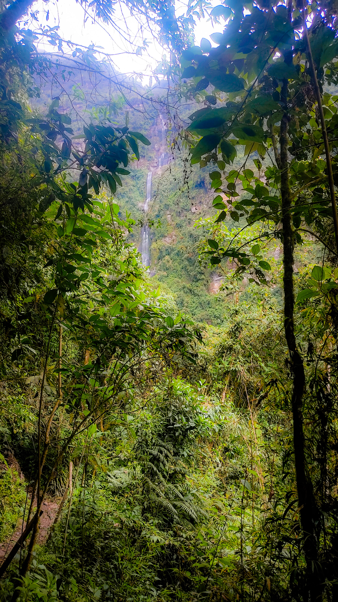
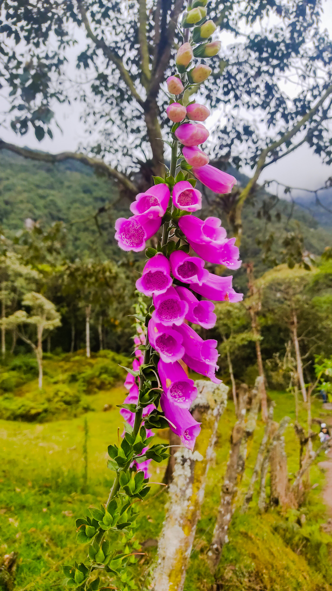

La chorrera
Una maravilla natural y una aventura a 45 minutos de Bogotá. Ubicada en Choachí, ésta es la más larga del país y la sexta más larga de América Latina. Su chorro tiene 590 metros de altura.
La Chorrera es una cascada con una caída de agua escalonada. esta es la más alta de Colombia (590 metros), sexta en Suramérica y 60 en el mundo. Su agua es de páramo totalmente potable y cristalina.
Para admirar los metros de altura de la cascada más larga del país, hay que irse al oriente de Choachí, entre las montañas Alto Grande y El Amarillo. La caminada es por una trocha, cuesta arriba, a través de vegetación abundante y húmeda.
Para admirar los metros de altura de la cascada más larga del país, hay que irse al oriente de Choachí, entre las montañas Alto Grande y El Amarillo. La caminada es por una trocha, cuesta arriba, a través de vegetación abundante y húmeda.
Actividades
Camina hasta el Chiflón y practica rappel y torrentismo
A pesar que no es tan grande, esta cascada pequeña es hermosa y vale la pena conocer. Se puede pasar tras ella por la cortina de agua de 40 metros. En esta zona se encuentra el puente de fotografía, el Charco Natural, la Gruta del Señor de Los Milagros, un restaurante, algunas casetas de artesanías y venta de víveres. Por su altura es ideal para la practicas de rappel y torrentismo.
Camina hasta La Chorrera
Si vas al Parque Aventura La Chorrera, tienes que llegar hasta La Chorrera. El lugar es simplemente asombroso y no hay palabras que puedan describirla. La caminata, que no es tan fácil, es un poco larga (de una hora y media en cada trayecto) pero vale totalmente la pena.
Sube hasta la Cueva de los Monos
La verdad es que la Cueva de los Monos no es el nombre que le haría justicia al lugar. Cuando uno llega allí, no es lo que el nombre sugiere. No hay monos y no es una cueva, es más bien un techito de roca en donde figuras de estalagmitas con diferentes formas dan su magia. Además, es un punto en donde se pueden obtener lindas vistas del parque y también de Bogotá.
Sube hasta la Virgen de Guadalupe
Este es un lugar casi escondido y que muy pocas personas conocen, pero en el camino a La Chorrera se encuentra una subida que da hasta la estatua de la Virgen de Guadalupe y ofrece vistas alucinantes de toda la ciudad de Bogotá. Es algo que no hay que perderse.
Fotos
 

Nosotros
Datos Familiares de Cristian Leonardo Garcia Poveda
Madre: Luz Poveda Rivillas
Padre: Elías Garcia Mora
Hermanos: Mateo Garcia Poveda, William Garcia Poveda, Kevin Garcia Poveda
Estado civil: Soltero
Sobrinos: Camilo Garcia Casallas, Alan Garcia Casallas
Datos Familiares de Cristian Leonardo Garcia Poveda
Madre: Luz Poveda Rivillas
Padre: Elías Garcia Mora
Hermanos: Mateo Garcia Poveda, William Garcia Poveda, Kevin Garcia Poveda
Estado civil: Soltero
Sobrinos: Camilo Garcia Casallas, Alan Garcia Casallas